|
|
|
Старый Новый Год в Горной Стране
(13 - 14 января 2007) Погода теплая, январским морозом и не пахнет. Парочка хоббитов и эльфийка покинули Заколдованый город и направились в Горную страну. По дороге им попалась замерзшая река, на которой полурослики привязали к ногам длинный палки с загнутыми носками и поехали на них. Один хоббит все время падал и ругался как орк, потому что не намазал свои палки волшебной мазью. А эльфийка как шла, так и шла, потому что эльфы легкие и в снег не проваливаются, да и снега почти не было.
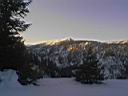 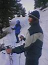 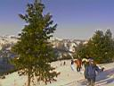 На следующее утро все гости замка решили подняться на Самую Высокую Гору! Они долго шли по узвилистой тропинке и считали повороты, вышли на Лесной Холм, немного потропили и вот она - заснеженная Горная Страна, освещаемая ярким солнцем! Где-то играли на волынке и пели песни на незнакомом языке, а маленькая компания шла по солнечному склону в сторону вершины. По дороге им попалась снежная хижина, в которой было светло и пусто. Еще на их пути был и холодный ветер, и теплые скалы, и все время вверх и вверх... 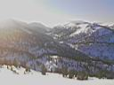 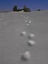 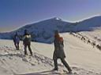 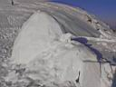 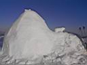 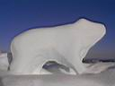 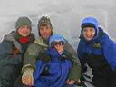 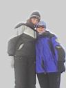 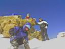 ... но Гора хоть и Самая Высокая, да хоббиты и эльфы тоже не промах, поднялись, и увидели они всю Горную Страну, и даже синее Священное Море и Острые Западные Горы было видно с этой Высокой Горы! и было им СЧАСТЕ! и повешали они свой флаг рядом с другими и пошли обратно. Потому как ни смотря на счасте, на Горе было холодно и ветренно, а чуть ниже у теплых солнечных скал их ждал горячий чай и сладости, второй завтрак пропускать ни-зяя! :) * * * * * Январь 2007. Белокрылов А.Ю. Слюдянка. Post Scriptum СНежная :
Хоббитик, приветик! Классное получилось повествование! И в самом деле хочется попасть в эльфийскую страну.
Мне даже хочется поменять логин на Эльфийский
Январь 2007. Белокрылов А.Ю. Слюдянка. |
|